Java Virtual Machine，So Fascinating.
学习参考资料：
- 《深入理解 Java 虚拟机第 3 版》
- 宋红康 JVM 教程
一些工具：
- IDEA Plugin：
jclasslib Bytecode viewer
内存与垃圾回收
JVM 与 Java 体系结构
前言
The Java Virtual Machine is the cornerstone of the Java platform. It is the component of the technology responsible for its hardware- and operating system-independence, the small size of its compiled code, and its ability to protect users from malicious programs.
The Java Virtual Machine is an abstract computing machine. Like a real computing machine, it has an instruction set and manipulates various memory areas at run time. It is reasonably common to implement a programming language using a virtual machine.
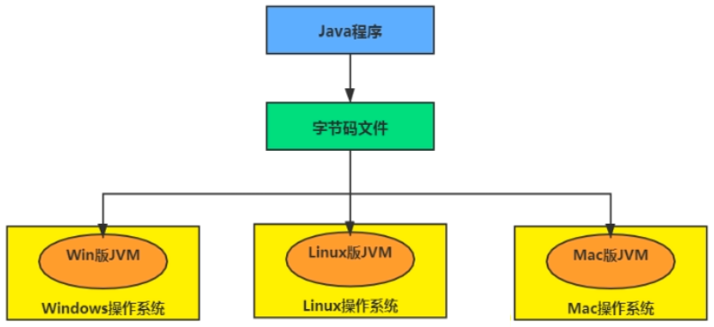 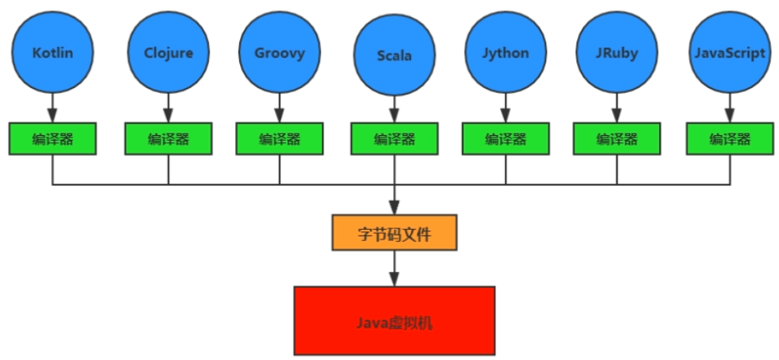 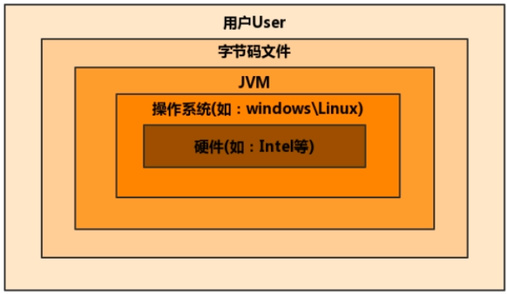For the sake of security, the Java Virtual Machine imposes strong syntactic and structural constraints on the code in a class file. However, any language with functionality that can be expressed in terms of a valid class file can be hosted by the Java Virtual Machine. Attracted by a generally available, machine-independent platform, implementors of other languages can turn to the Java Virtual Machine as a delivery vehicle for their languages.
JVM 的整体结构
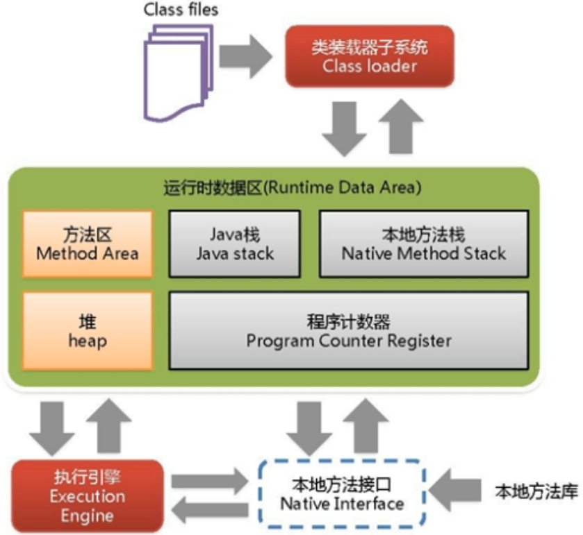Java 代码执行流程
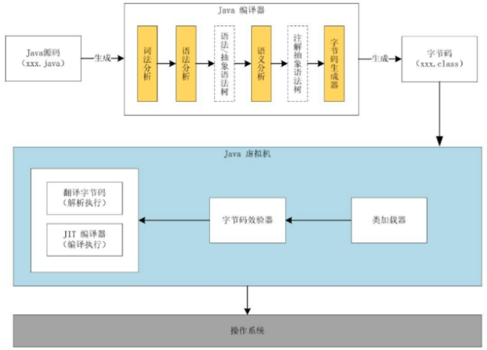JVM 的架构模型
Java 编译器输入的指令流基本上是一种基于栈的指令集架构。
基于栈式架构的特点：
- 设计和实现更简单，适用于资源受限的系统
- 避开了寄存器的分配难题：使用零地址指令方式分配
- 指令流中的指令大部分是零地址指令，其执行过程依赖于操作栈。指令集更小，编译器容易实现。
- 不需要硬件支持，可移植性更好，更好实现跨平台
1 | int i = 2; |
基于寄存器架构的特点：
- 典型的应用是 x86 的二进制指令集：比如传统的 PC 以及 Android 的 Davlik 虚拟机。
- 指令集架构则完全依赖硬件，可移植性差
- 性能优秀和执行更高效
- 花费更少的指令去完成一项操作
- 在大部分情况下，基于寄存器架构的指令集往往都以一地址指令、二地址指令和三地址指令为主，而基于栈式架构的指令集却是以零地址指令为主。
1 | // 2+3 |
反编译操作：javap -v test.class
JVM 的生命周期
虚拟机启动
- JVM 启动通过引导类加载器
bootstarp class loader创建一个初始类initial class来完成的，这个类由虚拟机的具体实现指定
- JVM 启动通过引导类加载器
虚拟机执行
- 一个运行中的 JVM 有一个清晰的任务：执行 Java 程序
- 执行一个所谓的 Java 程序，真真正正在执行的是一个叫做 JVM 的进程
- 打印 JVM 进程：
jps
虚拟机退出
- 程序正常执行结束
- 程序运行过程中遇异常/错误而异常中止
- 某线程调用 Runtime 或 System 的 exit/halt 方法，并且 Java 安全管理器也允许这次 exit/halt 操作
- 除此之外，JNI (Java Native Interface) 规范描述了用 JNI Invocation API 来加载/卸载 JVM 时，JVM 的退出情况
JVM 的发展历程
Sun Classic VM
- 第一款商用 JVM
- 只提供解释器，解释器和 JIT 编译器（外挂的）无法同时配合
- Hotspot 内置了此 VM
Exact VM
- Exact Memory Management 准确式内存管理，也可叫 Non-Conservative/Accurate Memory Management。虚拟机可知内存中某个位置的数据具体是什么类似（变量/引用）
- 具备现代高性能 VM 的雏形：热点探测、编译器和解释器混合工作模式、
- 只在 Solaris 平台短暂使用，最终被 Hotspot 替换
HotSpot VM
- 绝对的市场地位
- Oracle JDK / OpenJDK 默认虚拟机
- 热点代码探测技术
通过计数器找到最具编译价值代码，触发即时编译或栈上替换
通过编译器与解释器协同工作，在最优化的程序响应时间与最佳执行性能中取得平衡
JRocket（EBA 公司，该公司 08 年被 Oracle 收购）
- 专注于服务器端应用
不太关注程序启动速度，因此不包含解释器实现，全部代码靠即时编译器编译后执行 - JRocket JVM 是目前世界上最快的 JVM。70% 性能提升和 50% 硬件减少
- MissionControl 服务套件，以极低的开销来监控/管理/分析生产环境中的应用程序的工具
- 专注于服务器端应用
IBM 的 J9
- 市场定位于 HotSpot 接近
- 有影响力的三大商用虚拟机之一，号称世界上最快的 Java 虚拟机（在 IBM 机上）
- 17 年开源了 J9，为 OpenJ9，给 Eclipse 基金会
KVM 和 CDC/CLDC Hotspot
- Oracle 在 Java ME 产品线上的两个虚拟机 CDC/CLDC HotSpot Implemention VM
- 运行塞班系统上的 Java 手机游戏
TaobaoJVM
基于 OpenJDK 开发的定制版本 AlibabaJDK
创新的 GCIH (GC invisible heap) 技术实现了 off-heap，即将生命周期较长的 Java 对象从 heap 中移 heap 外，并且 GC 不能管理 GCIH 内部的 Java 对象，以此达到降低 GC 的回收频率和提升 GC 的回收效率的目的
GCIH 中的对象还能在多个 JVM 进程中共享
使用 crc32 志林实现 JVM intrinsic 降低 JNI 调用开销PMU hardware 的 Java profiling tool 和诊断协助功能
针对大数据场景的 ZenGC硬件严重依赖 intel CPU，损失了兼容性，但提高了性能
Dalvik VM
- Google 开发，没有遵循 JVM 规范，应用于 Android，并在 Android 2.2 中提供了 JIT，发展迅猛
- 基于寄存器架构
- 执行的是编译以后的 dex (Dalvik Executable) 文件，效率高
dex 文件可通过 Class 文件转化而来，通过 Java 语法编写应用程序，可直接使用大部分 Java API - Android 5.0 使用支持提前编译（Ahead Of Time Compilation，AOT）的 ART VM 替换 Dalvik VM
Graal VM
- 18 年，Oracle Labs 公开，号称 “Run Programs Faster Anywhere”
- 跨语言全栈虚拟机，可作为任何语言的运行平台使用，包括 C++、Python、R、Ruby、JavaScript 等
- 支持不同语言中混用对方的接口和对象，支持这些语言使用已经编写好的本地库文件
- 工作原理是将这些语言的源代码或源代码编译后的中间格式，通过解释器转换为能被 Graal VM 接受的中间表示。提供了 Truffle 工具集快速构建面向一种新语言的解释器。在运行时还能进行即时编译优化，获得比原生编译器更优秀的执行效率。
其他：Azul VM、Liquid VM、Apache Harmony、Microsoft JVM
类加载子系统
类加载器子系统：
加载字节码文件，使得其中的变量/方法等信息有组织地加载到内存
作用：负责从文件系统/网络中加载 Class 文件，只负责加载，至于是否可运行，由 Execution Engine 决定
三个阶段：
- 加载阶段
- 引导类加载器 BootStrap ClassLoader
- 扩展类加载器 Extension ClassLoader
- 系统类加载器 Application ClassLoader
- 链接阶段
- 验证 verify
- 准备 prepare
- 解析 resolve
- 初始化阶段
- 加载阶段
加载的类信息存放于一块称为方法区的内存空间。除了类的信息外，方法区中还会存放运行时常量池信息，可能还包括字符串字面量和数字常量（这部分常量信息是 Class 文件中的常量池部分的映射）
ClassLoader 角色
class file 存在于本地硬盘行，可以理解为设计师画在纸上的模板，而最终这个模板在执行的时候是要加载到 JVM 中来。根据这个模板实例化出 n 个一模一样的实例
class file 加载到 JVM 中，被称为 DNA 元数据模板，放在方法区
在
.class 文件->JVM->元数据模板过程中，ClassLoader 扮演快递员的角色
类的加载过程
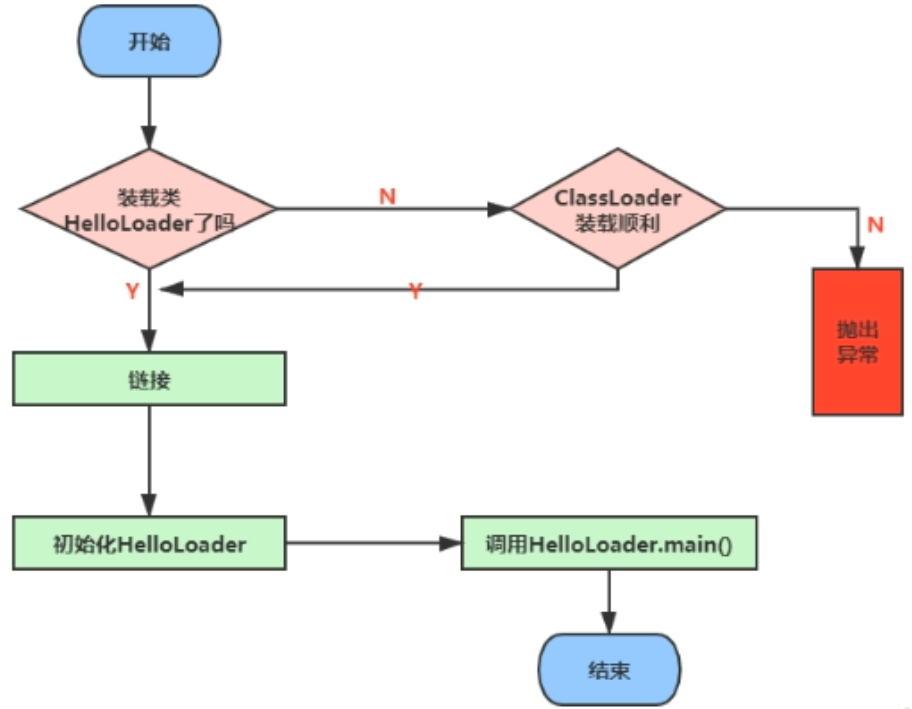Loading
- 通过一个类的全限定名获取定义此类的二进制字节流
- 本地系统
- 网络，比如 Web Applet
- zip 包（jar、war 格式的基础）
- 运行时计算生成，如动态代理
- 由其他文件生成，如 JSP
- 从专有数据库中提取 .class 文件，少见
- 从加密文件中获取，典型地防 Class 文件被反编译的 措施
- 将这个字节流所代表的静态存储结构转换为方法区的运行时数据结构
- 在内存中生成一个代表这个类的 java.lang.Class 对象，作为方法区这个类的各种数据的访问入口
- 通过一个类的全限定名获取定义此类的二进制字节流
Linking
- 验证 Verify
- 目的在于确保 Class 文件的字节流中包含信息符合当前 VM 要求，保证被加载类的正确性，不会危害虚拟机自身安全
- 文件格式验证/元数据验证/字节码验证/符号引用验证
- 准备 Prepare
- 为变量分配内存并且设置该类变量的默认初始值，即零值。initial 阶段才会给 static 变量设置值
- 不包含用 final 修饰的 static，final 在编译的时候就会分配了，准备阶段会显式初始化
- 这里不会为实例变量分配初始化，类变量会分配在方法区中，而实例变量是会随着对象一起分配到 Java 堆中
- 解析 Resolve
- 将常量池内的符号引用转换为直接引用的过程
- 事实上，解析操作往往会伴随着 JVM 在执行完初始化之后再执行
- 符号引用就是一组符号用来描述所引用的目标。符号引用的字面量形式明确定义在《Java 虚拟机规范》的 Class 文件格式中。直接引用就是直接指向目标的指针、相对偏移量或一个间接定位到目标的句柄
- 解析动作主要是针对类或接口、字段、类方法、接口方法、方法类型等。对应常量池中的
CONSTANT_Class_info、CONSTANT_Fieldref_info、CONSTANT_Methodref_info等。
- 验证 Verify
Initial
执行类构造器方法
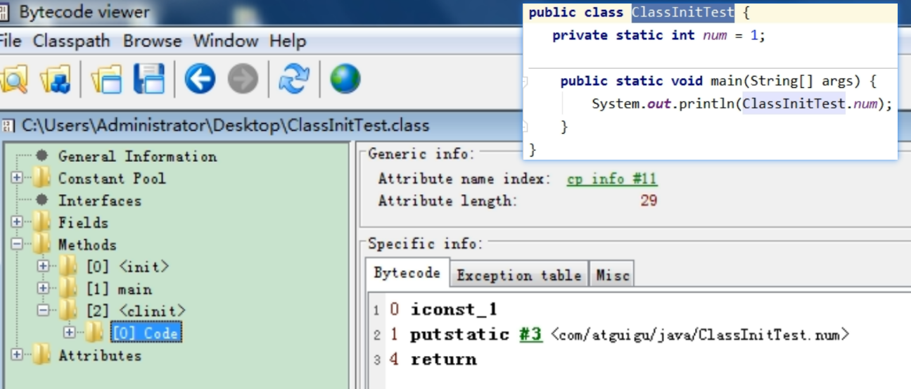<clinit>()class init 的过程此方法不需定义，是 javac 编译器自动收集类中的所有类变量的赋值动作和静态代码块中的语句合并而来。如果没有静态变量和静态代码块的话就不生成
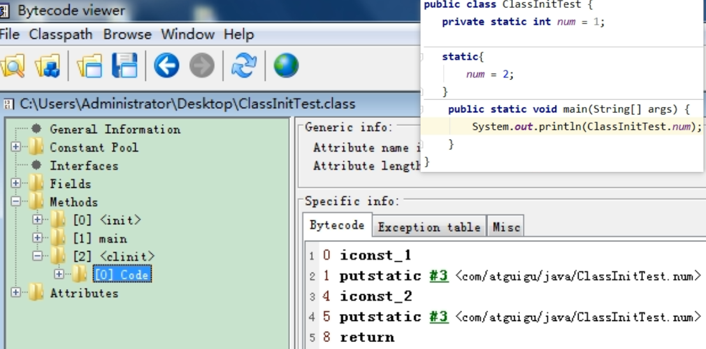<clinit>()构造器方法中指令按语句在源文件中出现的顺序执行

<clinit>()不同于类的构造器
关联：构造器是虚拟机视角下的<init>()
若该类具有父类，JVM 会保证子类的
<clinit>()执行前，父类的<clinit>()已经执行完毕
* 虚拟机必须保证一个类的 `<clinit>()` 方法是并发安全的
<img src="image-20210127180042340.png" style="zoom:67%;" />类加载器的分类
分类：
- JVM 支持两种类型的 ClassLoader
- 引导类加载器 BootStrap ClassLoader
- 自定义类加载器 User-Defined ClassLoader
定义：所有派生于抽象类 ClassLoader 的类加载器都为自定义类加载器，并不是字面上的指开发人员自定义的 ClassLoader
- 常见 ClassLoader 只有 3 个
- 下图中的四者是包含关系，不是上下层/继承关系
- BootStrap Class Loader 是 C/C++ 代码写的，其他是 Java
1 | // 获取系统类加载器 sun.misc.Launcher$AppClassLoader |
虚拟机自带的加载器：
- BootStrap ClassLoader
- C/C++ 实现，嵌套于 JVM
- 用来加载 Java 核心库（
JAVA_HOME/jre/lib/rt.jar、resources.jar或sun.boot.class.path路径下的内容） - 没有父加载器
- 加载扩展类和应用程序类加载器并制定为他们的父类加载器
- 安全考虑，Bootstrap ClassLoader 只加载报名为 java、javax、sun 等开头的类
- Extension ClassLoader
- Java 编写，由
sun.misc.Launcher$ExtClassLoader实现 - 派生于 ClassLoader 类
- 父类加载器为 BootStrap ClassLoader
- 从
java.ext.dirs系统属性所制定的目录中加载类库，或从 JDK 的安装目录的jre/lib/ext子目录下加载类库。若用户的 jar 放在此目录下，也会由其加载
- Java 编写，由
1 | // 获取 BootStrapClassLoader 能够加载的 api 的路径 |
用户自定义类加载器：
why?
隔离加载类
修改类加载的方式
拓展加载源
防止源码泄露步骤
继承 java.lang.ClassLoader
JDK1.2 之前要重写 loadClass() 方法，之后不建议重写 loadClass() 方法，而是建议把自定义的类加载逻辑写在 findClass() 方法中
1
2
3
4
5
6
7
8
9
10
11
12
13
14
15
16public class CustomClassLoader extends ClassLoader {
@Override
protected Class<?> findClass(String name) throws ClassNotFoundException {
try {
byte[] result = getClassFromCustomPath(name);
// ...
} catch (FileNotFoundException e) {
e.printStackTrace();
}
}
private byte[] getClassFromCustomPath(String name) {
// 从自定义路径中加载指定类
// 可以包含加密和解密的过程
}
}若没有太过复杂的需求，可直接继承 URLClassLoader，这样可避免自己去编写 findClass() 方法及其获取字节码流的方式，使自定义类加载器编写更加简洁
关于 ClassLoader：
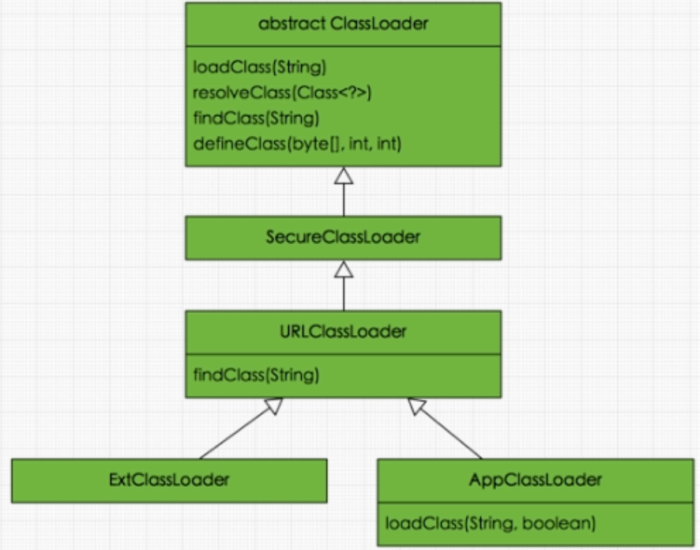获取 ClassLoader 的途径：
- 获取当前类的 ClassLoader：
clazz.getClassLoader() - 获取当前线程上下文的 ClassLoader：
Thread.currentThread().getContextClassLoader() - 获取系统的 ClassLoader：
ClassLoader.getSystemClassLoader() - 获取调用者的 ClassLoader：
DriverManger.getCallerClassLoader()
双亲委派机制
JVM 对 class 文件采用的是按需加载的方式，也就是说当需要使用该类时才会将它的 class 文件加载到内存生成 class 对象。而且加载某个类的 class 文件时，JVM 虚拟机采用的是双亲委派模式，即把请求交由父类处理。
工作原理：
- 如果一个类加载器收到了类加载请求，它并不会自己先加载，而是将请求委托给父类的加载器去执行
- 如果父类加载器还存在其父类加载器，则进一步向上，请求最终到达顶层的 BootStrap ClassLoader
- 如果父类加载器可以完成类加载，则返回，或者子加载器才会尝试自己去加载
好处：
- 避免类的重复加载
- 保护程序安全，防止核心 API 被随意篡改
java.lang.SecurityException: Prohibited package name: java.lang
沙箱安全机制：自定义一个 String 类，加载时会使用引导类加载器，加载过程中会先加载 JDK 的文件 rt.jar 下的 java\lang\String.class 此时自定义 String.class 的 main 方式就会找不到
JVM 视角中两个 class 对象为同一个类的条件：
- 全限定类名相同
- 加载这个类的 ClassLoader 实例对象相同
对类加载器的引用：
- JVM 必须知道一个类型是 BootStrap ClassLoader 加载还是自定义 ClassLoader 加载的。
- 如果一个类型是由用户类加载器加载，JVM 会讲这个类加载器的一个引用作为类型信息的一部分保存在方法区中
- 当解析一个类型到另一个类型的引用时，JVM 需要保证这两个类型的类加载器是相同的。
类的主动使用（除了以下，其他都是被动使用，不会导致类的初始化）：
- 创建类的实例
- 访问某个类或接口的静态变量，或者对该静态变量赋值
- 调用类的静态方法
- 反射
- 初始化一个类的子类
- JVM 启动时被标明为启动类的类
- JDK7 开始提供的动态语言支持：
java.lang.invoke.MethodHandle 实例的解析结果
RET_getStatic、REF_putStatic、REF_invokeStatic 句柄对应的类没有初始化
运行时数据区
概述与线程
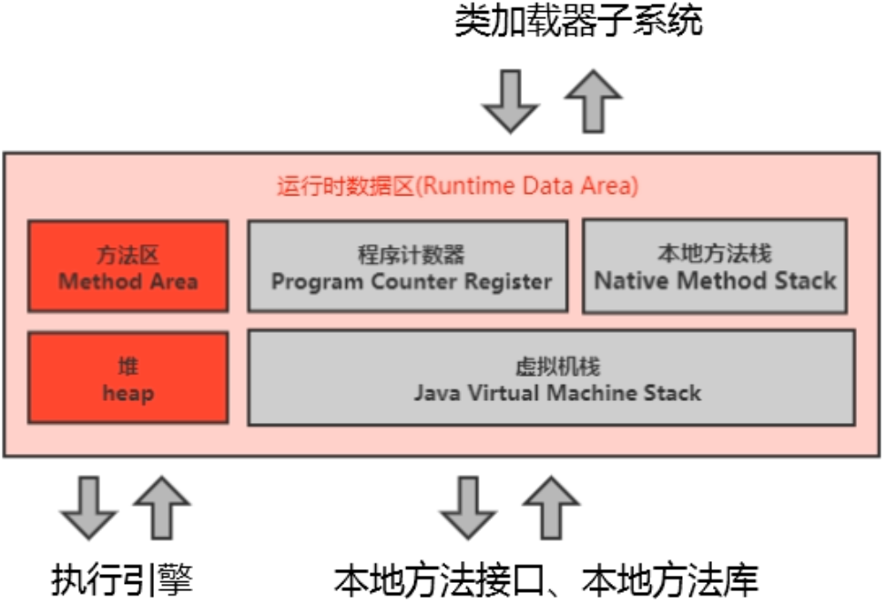运行时数据区：
- 红色部分（堆、堆外内存 (永久代或元空间、代码缓存)）：JVM 定义了若干种程序运行期间会使用到的运行时数据区，其中有一些会随着虚拟机启动而创建，随着虚拟机退出而销毁
- 灰色部分（程序计数器、栈、本地栈）：则是与线程一一对应，随线程开始/结束而创建/销毁
更细致的：
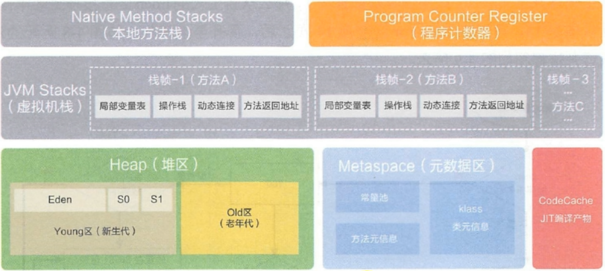 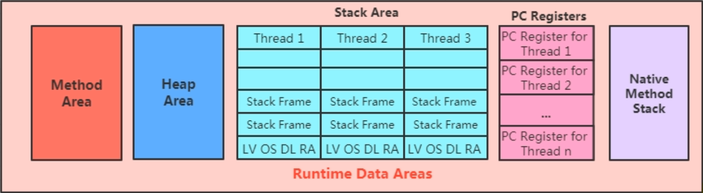线程：Java 线程与 OS 线程一一对应
JVM 系统线程：
- 虚拟机线程：JVM 到达安全点才会出现。执行类型包含 “stop-the-world” 的垃圾收集，线程栈收集，线程挂起，以及偏向锁撤销
- 周期任务线程：这种线程是时间周期时间的体现（比如中断），他们一般用于周期性操作的调度执行
- GC 线程：对在 JVM 里不同种类的垃圾收集行为提供了支持
- 编译线程：在运行时会将字节码编译成本地代码
- 信号调度线程：接收信号并发送给 JVM，在它内部通过调用适当的方法进行处理
程序计数器
- PC 寄存器用来存储指向下一条指令的地址，由 Execution Engine 读取下一条指令。
- 它是一块很小的内存，几乎可以忽略不计，也是运行速度最快的内存
- JVM 规范中，每个线程都有它自己的 PC Register，是线程私有的，生命周期与线程的生命周期保持一致
- 任何时间一个线程都只有一个方法在执行，也就是所谓的当前方法。程序计数器会存储当前线程正在执行的 Java 方法的 JVM 指令地址；若是在执行 native 方法，则是未指定值 undefined
- 它是程序控制流的指示器，分支、循环、跳转、异常处理、线程恢复等基础功能都需要依赖它
- 字节码解释器工作时就是通过改变这个计数器的值来选取下一条需执行的字节码指令
- 是唯一一个在 JVM 规范中没有规定任何 OOM 情况的区域
- Stack Area 和 PC Registers 都没有 GC
虚拟机栈 ★
Java Virtual Machine Stack：
起因：跨平台性设计，JVM 指令根据栈来设计。
每个线程创建时都会创建一个虚拟栈，其内部保存一个个的栈帧 Stack Frame，对应一次次的 Java Method Invoke
生命周期与线程一致
作用：保存方法的局部变量（8 种基本数据类型、对象的引用地址）、部分结果，并参与方法的调用和返回
JVM 直接对 Java 栈的操作：
- 方法执行，伴随着压栈
- 执行结束后的弹栈
不存在垃圾回收
栈中可能的异常：
JVM 规范允许 Java 栈的大小是动态的或者是固定不变的
若采用固定大小的 JVM 栈，那每个 Thread 的 JVM Stack 容量在创建时独立选定。若线程请求分配的栈容量超过 JVM 设置，则抛 StackOverflowError 异常
若采用动态扩展，在扩展时发现不足了则抛 OutOfMemoryError
-Xss256k、-Xss1024k 可以设置栈大小
栈帧的内部结构：
- 局部变量表 LV, Local Variables
- 操作数栈 OS, Operand Stack
- 动态链接 DL, Dynami Linking，指向运行时常量池的方法引用
- 方法返回地址 RA, Return Address，方法退出的定义
- 一些附加信息
局部变量表：
也称为局部变量数组、本地变量表
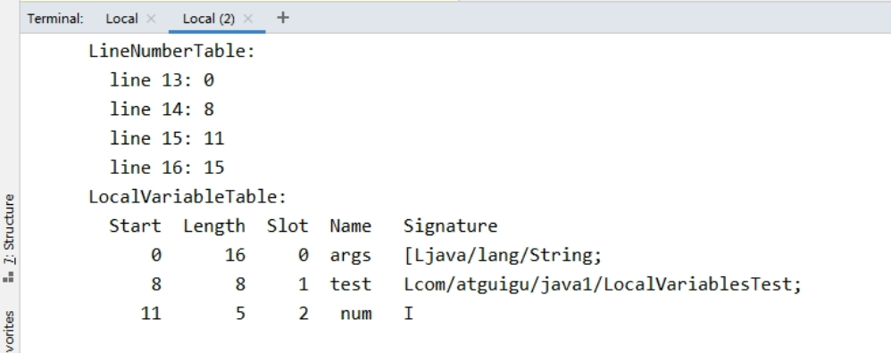定义为一个数字数组，主要存储方法 参数和定义在方法体内的局部变量，数据类型包括各类基本数据类型、Object Reference、returnAddress
是线程的私有数据，不存在数据安全问题
容量大小是编译器确定下来的，保存在方法的 Code 属性的 maximum local variables 数据项中。方法运行期间是不会改变局部变量表大小的。
最基本的存储单元：Slot（变量槽）
参数值的存放总是在局部变量数组的 index0 开始，到数组长度-1 的索引结束
32 位以内的类型只占用一个 slot（包括 returnAddress 类型），64 位的类型（long/double）占用两个 slot
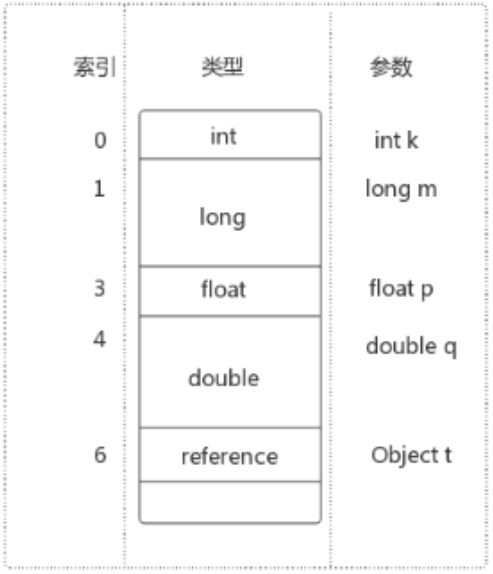如果当前帧由构造方法或实例方法创建，那 this 变量会存放在 index=0 的 slot 处，其他参数按按照参数表顺序排列
[this, param, localVariable]Slot 重复利用：
栈帧中的局部变量表中的槽位是可重用的，如果一个局部变量过了其作用域，那么在作用域后新声明的局部变量就可能复用过期局部变量的槽位1
2
3
4
5
6
7void test() {
{
int a = 2;
System.out.println(2);
}
int b = 3;
}
局部变量和静态变量对比
- 静态变量有 2 次初始化机会，prepare 和 initial
- 局部变量表则不存在系统初始化过程，意味着一旦定义了局部变量则必须人为的初始化，否则无法使用。
int i; System.out.println(i); // CE
操作数栈：
- 方法执行过程中，根据字节码指令，往栈中写入数据或提取数据，即 push/pop。比如：执行 复制/交换/求和 等操作
- 保存计算过程中的中间结果，同时作为计算过程中变量的临时存储空间
- 如果被调用的方法带有返回值的话，其返回值将会被压入当前栈帧的操作数栈中
栈顶缓存技术 Top-of-Stack Cashing：
- 栈式结构的 JVM 所使用的零地址指令更加紧凑，完成一项操作伴随着很多的入栈和出栈操作，即意味着更多的指令分派 instruction dispatch 次数和内存读写次数。
HotSpot JVM 考虑将栈顶元素全部缓存到物理 CPU 的寄存器而不是内存中，以此降低对内存的读写次数，提高执行引擎的执行效率
动态链接（指向运行时常量池的方法引用）：
- 帧数据区：方法返回地址、动态链接、附加信息
- 每个栈帧内部都包含一个指向运行时常量池中该栈帧所属方法的引用，包含这个引用的目的就是为了支持当前方法的代码能够实现动态链接 Dynamic Linking。比如 invokedynamic 指令
- 在 Java 源文件被编译到字节码文件中时，所有的变量和方法引用都作为符号引用 Symbolic Reference 保存在 class 文件的常量池中。比如：描述一个方法调用其他方法时，就是通过常量池中指向方法的符号引用来表示的。
- 动态链接作用：将这些符号引用转换为调用方法的直接引用
- 使用体现：bytecode 里面的
#1、#2之类的 - 常量池作用：提供一些符号和变量，便于指令的识别
方法的调用（解析与分派）：
JVM 中，符号引用转换为调用方法的直接引用与方法的绑定机制相关
静态链接：被调用的目标方法在编译期可知，且运行期保持不变时，将调用方法的符号引用转换为直接引用的过程
invokespecial、invokestatic
动态链接：被调用方法在编译器无法确定，只能再运行时将调用方法的符号引用转换为直接引用invokevirtual、invokeinterface推广一下 => 早期绑定 Early Binding、晚期绑定 Late Binding
绑定是一个字段、方法或类在符号引用被替换为直接引用的过程，仅发生一次非虚方法（静态方法/私有方法/final方法/构造器/父类方法）与虚方法
- 普通调用指令：
invokespecial（非虚方法）：调用静态方法，解析阶段确定唯一方法版本invokestatic（非虚方法）：调用方法、私有及其父类方法，解析阶段确定唯一方法版本 invokevirtual：调用所有虚方法invokeinterface：调用接口方法
- 动态调用指令
invokedynamic：动态解析出需要调用的方法，然后执行
Java7 增加的指令，是 Java 为实现【动态类型语言】支持而做的一种改进（本质是对 JVM 规范的修改，最直接受益者是运行在 JVM 的动态语言的编译器），但在 Java7 中并没有提供直接生成 invokedynamic 指令的方法，需要借助 ASM 等工具，直到 Java8 中 Lambda 的出现。
- 普通调用指令：
动态语言和静态语言：
- 区别在于对类型的检查是编译期还是运行期
- 静态类型语言是判断变量的类型信息，动态类型语言则是判断变量值的类型信息
方法重写的本质（动态分派）：
- （调用之前，方法的对象/类在栈顶）找到操作数栈的栈顶元素所执行的对象的实际类型，记作 C
- 先在类型 C 中找到与常量中描述符合、简单名称符合的方法，并进行访问权限校验（通过则返回这方法的直接引用，不通过则返回
java.lang.IllegalAccessError异常） - 若没有找到符合的方法，则按照继承关系从下往上对 C 的各个父类依次执行操作 3
- 最终没找到合适方法，则抛出
java.lang.AbstractMethodError异常
虚方法表 virtual method table：
- OOP 中，动态分派的使用是很频繁的，为了提高性能，JVM 在类的方法区建立了一个虚方法表，使用索引代替查找，表中存放各个方法的实际入口
- 虚方法表会在类加载的 Linking 阶段被创建并开始初始化，类的变量初始值准备完成后，JVM 会把该类的方法表也初始化完毕 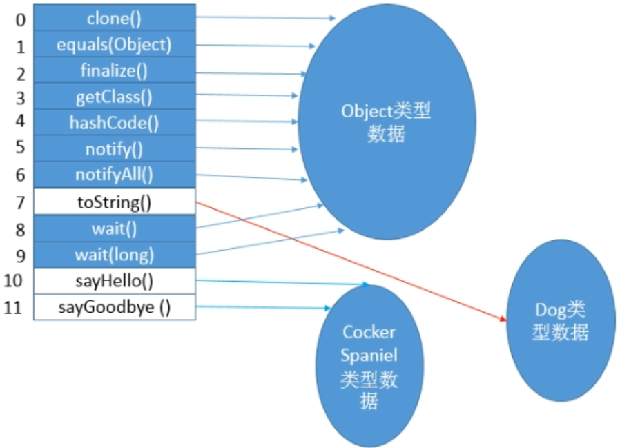
方法返回地址：
方法开始执行后，仅两种方式退出该方法
正常完成出口：执行引擎遇到任一个方法返回的字节码指令，将返回值传递给上层方法调用者
- ireturn (boolean、byte、char、short、int)
- lreturn
- freturn
- dreturn
- areturn
- return (void、构造器、类和接口初始化)
异常完成出口（没有返回值给上层调用者）：方法执行过程中遇到了异常，异常没有在方法内处理，导致方法退出
方法执行过程中抛出异常时的异常处理，存储在一个异常处理表中，方便在发生异常时找到处理异常的代码，如下，PC: 4->8 范围发生的异常可以跳 PC=111
2
3Exception table:
from to target type
4 8 11 Class java/io/IOException本质上，方法的退出即当前栈帧出栈的过程。此时需要恢复上层方法的局部变量表、操作数栈、将返回值压入调用者栈的操作数栈、设置 PC 等
一些附加信息：
- 栈帧中还允许携带与 JVM 实现相关的一些附加信息。例如对程序调试提供支持的信息
本地方法接口
Native Method：
一个 Java 调用非 Java 代码接口。很多 PL 都有这一机制，比如 C++ 中的
extern "C"告知 C++ Compiler 去调 C 的函数。融合不同的编程语言为 Java 所用，初衷是融合 C/C++ 程序
可与除 abstarct 外的关键字共用
why: 有些功能用 Java 实现不容易或效率不高
now: 目前使用的越来越少，除非是与硬件有关的应用
本地方法栈
Native Method Stack:
线程私有
虚拟机栈管理 Java 方法调用，本地方法栈管理本地方法调用
某个线程调用一个本地方法时，它进入一个全新且不受 VM 限制的世界，和 VM 有同样的权限
- 可通过本地方法接口来访问虚拟机内的运行时数据区
- 甚至可以直接使用本地处理器中的寄存器
- 直接从本地内存的堆中分配任意数量的内存
并不是所有 JVM 都支持 Native Method，因为 JVM 规范没明确要求 Native Method Stack 的使用语言、具体实现、数据结构等
在 Hotspot JVM 中，直接将本地方法栈和虚拟机栈合二为一
堆 ★
Heap 概述：
一个 JVM 实例只存在一个堆内存，JVM 启动时创建并确定空间大小（可人为调节），是 Java 内存管理的核心区域，也是 JVM 管理的最大块内存空间
所有线程共享 Java 堆，在此还划分了线程私有的缓冲区（Thread Local Allocation Buffer，TLAB）
《Java 虚拟机规范》：堆可处于物理上不连续的空间，但逻辑上是连续的
《Java 虚拟机规范》：（几乎）所有的对象实例以及数组都应当在运行时分配在堆上。（栈帧中保存其引用）
The heap is the run-time data area from which memory for all class instances and arrays is allocated方法结束后，堆中的对象不会马上被移除，GC 时才会被移除
内存细分：
现代 GCer 大部分基于分代收集理论设计
Java 7 之前，堆内存逻辑上分为：
- 新生区(代)，Young (New) Generation Space，又分为 Eden 区和 Survivor 区
存放生命周期较短的瞬时对象，这类对象的创建和消亡都很迅速（IBM 研究表明，新生代中 80% 的对象都是 “朝生夕死”） - 养老区(代)，Tenure (Old) Generation Space
存放生命周期较长的对象（这些对象在某些极端情况还能与 JVM 生命周期一致） 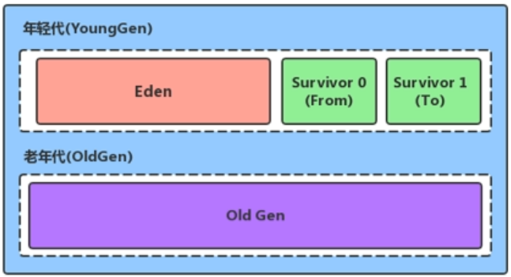 - 永久区(代)，Permanent (Perm) Space
- 新生区(代)，Young (New) Generation Space，又分为 Eden 区和 Survivor 区
Java 8 及之后，堆内存逻辑上分为：
- 新生代，Young (New) Generation Space，又分为 Eden 区和 Survivor 区
- 老年代，Tenure (Old) Generation Space
- 元空代，Meta Space 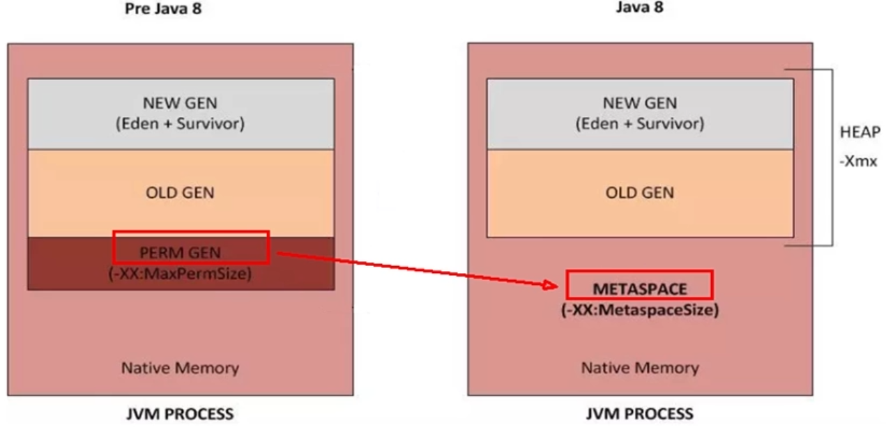
设置堆空间：
-Xms初始堆内存 （Young + Tenure 代）；Runtime.getRuntime().totalMemory；默认值：内存 / 64。-Xmx堆区最大内存；Runtime.getRuntime().maxMemory 会输出堆内存减 S0 或 S1 区的内存，因为这两个区只能选一个存，另一个是用来辅助 GC 的；默认值：内存 / 4-XX:+PrintGCDetails打印 GC 详情，或者在命令行jstat -gc 进程号-XX:NewRatio=2表示配置新生代和老年代的占比，此时是新生代占 1，老年代占 2（默认就是 2）-XX:SurvivorRatio=8配置 Eden 和 Survivor 区比例，此时 Survivor 区是 1，Eden 区是 8-XX:-UseAdaptiveSizePolicy：关闭自适应内存分配策略-XX:+UseAdaptiveSizePolicy：打开自适应内存分配策略（默认）
对象分配过程（内存分配和内存回收是严谨且相关的）：
- new 的对象先放伊甸园区，此区有大小限制。
- 当伊甸园的空间填满时，程序又需要创建对象，JVM 的垃圾回收器将对伊甸园区进行 Minor GC，将伊甸园区中的不再被其他对象所引用的对象进行销毁。再加载新的对象放到伊甸园区
- 然后将伊甸园中的剩余对象移动到 Survivor 0 区。
- 如果再次触发垃圾回收，此时上次幸存下来的放到 Survivor 0 区的，如果没有回收，就会放到 Survivor 1 区
- 如果再次经历垃圾回收，此时会重新放回 Survivor 0 区，接着再去 Survivor 1 区
- 啥时候能去养老区呢？可以设置次数。默认是15次。 可
-XX: MaxTenuringThreshold<N>进行设置。 - 在养老区，相对悠闲。当养老区内存不足时，触发 Major GC，进行养老区的内 存清理
- 若养老区执行了 Major GC 之后发现依然无法进行对象的保存，就会产生 OOM
进度：72 -
方法区 ★
直接内存
执行引擎
StringTable
垃圾回收
垃圾回收概述
垃圾回收相关算法
垃圾回收相关概念
垃圾回收器
字节码与类的加载
Class 文件结构
重要的官方文档：https://docs.oracle.com/javase/specs/jvms/se8/html/jvms-4.html
前置知识
Java 前端编译器：
- javac 是一种能够将 Java 源码编译为字节码的前端编译器。
- HotSpot VM 并没强制要求前端编译器只能 javac。只要编译结果符合 JVM 规范即可。
- 除了 javac (全量式编译) 之外，还有内置在 Eclipse 中的 ECJ（Eclipse Compiler for Java）编译器，是一种增量式编译器。
- Ctrl+S 后，ECJ 编译器把未编译部分的源码逐行进行编译，而非每次都全量编译。
- ECJ 不仅是 Eclipse 的默认内置前端编译器，在 Tomcat 中同样也是使用 ECJ 编译器来编译 jsp 文件。
- ECJ 基于 GPLv2 开源。
- 默认情况下，Intellij IDEA使用 javac 编译器（可自己设置为 ajc）
- 前端编译器并不会直接涉及编译优化等方面的技术，这些具体优化细节移交给 HotSpot 的 JIT 编译器负责。
涉及字节码指令的代码细节举例：
1 | public class IntegerTest { |
Class 类的本质：
- 任一个 Class 文件都对应着唯一一个类或接口的定义信息，但反过来说，Class 文件实际并不一定以磁盘文件的形式存在。
- Class 文件是一组以字节为单位的二进制流
Class 文件格式及其总体结构：
- Class 的结构不像 XML 等描述语言，它没有任何分隔符号，所以在其中的数据项都是严格限定的，字节的含义、长度、先后，都不允许改变。
- Class 文件格式采用一种类似于 C 语言结构体的方式进行数据存储，这种结构中只有两种数据类型
- 无符号数：基本的数据类型，以 u1、u2、u4、u8 来分别代表指定字节的无符号数
可用来描述 数字、索引引用、数量值、UTF-8 字符串值。 - 表：由多个无符号数或者其他表作为数据项构成的复合数据类型
所有表都习惯性地以_info结尾。
用于描述有层次关系的复合结构的数据，整个Class文件本质上就是一张表。
表没有固定长度，所以通常会在其前面加上个数说明
- 无符号数：基本的数据类型，以 u1、u2、u4、u8 来分别代表指定字节的无符号数
1 | ClassFile { |
魔数
- 每个 Class 文件开头的 4 个字节的无符号整数称为 Magic Number
- 它的唯一作用是确定这个文件是否为一个能被虚拟机接受的有效合法的 Class 文件。
即：魔数是Class文件的标识符。 - 使用魔数而不是扩展名来进行识别主要是基于安全方面的考虑，因为文件扩展名可以随意地改动。
- 魔数值固定为 0xCAFEBABE。不会改变。
- 如果一个 Class 文件不以 0xCAFEBABE 开头，虚拟机在进行文件校验的时候就会直接抛出以下错误：
Error: A JNI error has occurred, please check your installation and try again Exception in thread "main" java.lang.ClassFormatError: Incompatible magic value 1885430635 in class file Test
Class 文件版本
- 紧接着魔数的 4 个字节存储的是 Class 文件的版本号。同样也是4个字节。第 5 个和第 6 个字节所代表的含义就是编译的副版本号 minor_version，而第 7 个和第 8 个字节就是编译的主版本号 major_version。
- 它们共同构成了 class 文件的格式版本号。譬如某个 Class 文件的主版本号为 M，副版本号为 m，那么这个 Class 文件的格式版本号就确定为 M.m。
- 向下兼容：高版本兼容低版本。低版本执行高版本则会抛
java.lang.UnsupportedClassVersionError
版本号与平台的对应：
| 主版本（十进制） | 副版本（十进制） | 编译器版本 |
|---|---|---|
| 45 | 3 | 1.1 |
| 46 | 0 | 1.2 |
| 47 | 0 | 1.3 |
| 48 | 0 | 1.4 |
| 49 | 0 | 1.5 |
| 50 | 0 | 1.6 |
| 51 | 0 | 1.7 |
| 52 | 0 | 1.8 |
| 53 | 0 | 1.9 |
| 54 | 0 | 1.10 |
| 55 | 0 | 1.11 |
常量池 constant_pool
概述：
- 常量池是 Class 文件中内容最为丰富的区域之一。常量池对于 Class 文件中的字段和方法解析也有着至关重要的作用。
- 随着 JVM 的不断发展，常量池的内容也日渐丰富。可以说，常量池是整个 Class 文件的基石。
- 在版本号之后，紧跟着的是常量池的数量，以及若干个常量池表项。
- 常量池中常量的数量是不固定的，所以在常量池的入口需要放置一项 u2 类型的无符号数，代表常量池容量计数值（constant_pool_count）。与 Java中语言习惯不一样的是，这个容量计数是从1而不是0开始的。
- 常量池表项中，用于存放编译时期生成的各种字面量和符号引用，这部分内容将在类加载后进入方法区的运行时常量池中存放。
常量池计数器：
u2 类型，2 个字节，constant_pool_count=1 时表示常量池有 0 个常量项（没有常量项）
若为 0x16 = 22，表示有 21 个常量项，索引范围是
1-21把第 0 项常量空出来，是为了适配一种情况：某些指向常量池的索引值要表达 “不引用任何一个常量池项目” 的语义。此时这种情况即可用索引值 0 来表示。
常量池项类型及其结构细节：
常量池主要存放两大类常量
- 字面量（Literal）：文本字符串、final 的变量
String str=“atguigu”; final int NUM=10; - 符号引用（Symbolic References）：类和接口的全限定名、字段的名称和描述符、方法的名称和描述符
- 字面量（Literal）：文本字符串、final 的变量
术语
全限定名
java/lang/String;简单名称
指没有类型和参数修饰的方法或者字段名称，如 add() 方法和 num 字段的简单名称分别是 add 和 num描述符
描述字段的数据类型、方法的参数列表（包括数量、类型以及顺序）和返回值。具体如下：标志符 含义 B 基本数据类型 byte C 基本数据类型 char D 基本数据类型 double F 基本数据类型 float I 基本数据类型 int J 基本数据类型 long S 基本数据类型 short Z 基本数据类型 boolean V 代表 void 类型 L 对象类型，比如： Ljava/lang/Object;[ 数组类型，代表一维数组。比如： double[][][] is [[[D用描述符描述方法：
toString()方法的描述符() Ljava/lang/String;；int abc(int[] x, int y)方法的描述符为([II) I
常量池里的每个项都符合以下某种类型及其细节（第 1 个字节 tag 作为类型标记，用于确定该项是以下的哪个）
一个例子：
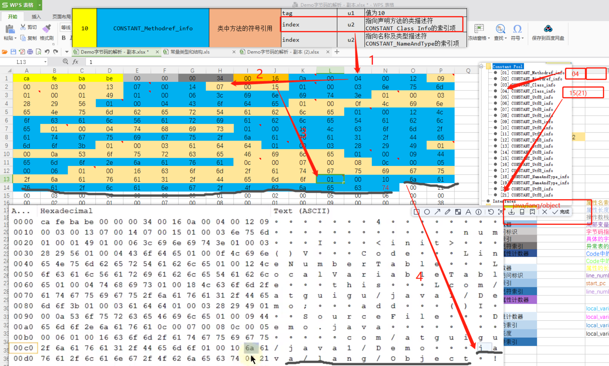总结：
- final 常量直接显示值，没用指向索引
- byte,short,char,boolean 标志为 3 的 CONSTANT_Integer_info 常量
- 在常量池列表中，CONSTANT_Utf8_info 常量项是一种使用改进过的 UTF-8 编码格式来存储诸如文字字符串、类或者接口的全限定名、字段或者方法的简单名称以及描述符等常量字符串信息
- 常量池可以理解为 class 文件之中的资源仓库，它是 Class 文件结构中与其他项目关联最多的数据类型（后面的很多数据类型都会指向此处），也是占用 Class 文件空间最大的数据项目之一
常量池中为什么要包含这些内容：
- Java 代码在进行 Javac 编译的时候，并不像 C/C++ 那样有链接这一步骤，而是在虚拟机加载 Class 文件的时候进行动态链接
- 也就是说，Class 文件不会保存各个方法、字段的最终内存布局信息，因此这些字段、方法的符号引用不经过运行期转换的话无法得到真正的内存入口地址，也就无法直接被虚拟机使用。当虚拟机运行时，需要从常量池获得对应的符号引用，再在类创建时或运行时解析、翻译到具体的内存地址之中
访问标志 access_flag
- 2 个字节，用于识别一些类或者接口层次的访问信息，包括：
- Class 是类还是接口
- 是否定义为 public 类型
- 是否定义为 abstract 类型
- 类的话，是否为 final
- 类的各个访问权限为 ACC_ 开头的常量，位与的运算结构作为 access_flag
比如，若是 public final 的类，则该标记为 ACC_PUBLIC | ACC_FINAL
| 标志名称 | 标志值 | 含义 |
|---|---|---|
| ACC_PUBLIC | 0x0001 | 标志为public类型 |
| ACC_FINAL | 0x0010 | 标志被声明为final，只有类可以设置 |
| ACC_SUPER | 0x0020 | 标志允许使用 invokespecial 字节码指令的新语义，JDK1.0.2 之后编译出来的类的这个标志默认为真。（使用增强的方法调用父类方法）；使用 ACC_SUPER 可以让类更准确地定位到父类的方法 super.method()，现代编译器都会设置并且使用这个标记。 |
| ACC_INTERFACE | 0x0200 | 标志这是一个接口 |
| ACC_ABSTRACT | 0x0400 | 是否为abstract类型，对于接口或者抽象类来说，次标志值为真，其他类型为假 |
| ACC_SYNTHETIC | 0x1000 | 标志此类并非由用户代码产生（即：由编译器产生的类，没有源码对应） |
| ACC_ANNOTATION | 0x2000 | 标志这是一个注解 |
| ACC_ENUM | 0x4000 | 标志这是一个枚举 |
补充说明：
- 带有 ACC_INTERFACE 标志的 class 文件表示的是接口而个是类，反之则表示的是类而个是接口
- 如果一个 class 文件被设置了 ACC_INTERFACE 标志，那么同时也得设置 ACC_ABSTRACT 标志。同时它不能再设置 ACC_FINAL、ACC_SUPER 或 ACC_ENUM 标志
- 如果没有设置 ACC_INTERFACE 标志，那么这个 class 文件可以具有上表中除 ACC_ANNOTATION 外的其他所有标志。当然，ACC_FINAL 和 ACC_ABSTRACT 这类互斥的标志除外。这两个标志不得同时设置。(注解是 @interface)
- ACC_SUPER 用于确定类/接口里面的 invokespecial 指令使用的是哪一种执行语义。针对 JVM 指令集的编译器都应当设置这个标志。对于 JavaSE8 及后续版本来说，无论 class 文件中这个标志的实际值是什么，也不管 class 文件的版本号是多少，Java 虚拟机都认为每个 class 文件均设置了 ACC_SUPER 标志。
- ACC_SUPER 是为了向后兼容由旧 Java 编译器所编译的代码而设计的。目前的 ACC_SUPER 标志在由 JDK1.0.2 之前的编译器所生成的 access flags 中是没有确定含义的，如果设置了该标志，那么 Oracle的Java 虚拟机实现会将其忽略
- ACC_SYNTHETIC 标志意味着该类或接口是由编译器生成的，而不是由源代码生成的
- 注解类型必须设置 ACC_ANNOTATION 标志。如果设置了 ACC_ANNOTATION 标志，那么也必须设置 ACC_ INTERFACE 标志。(注解是 @interface)
- ACC_ENUM 标志表明该类或其父类为枚举类型
类索引、父类索引、接口索引集合
- 在访问标记后，会指定该类的类别、父类类别以及实现的接口，格式如下：
1 | u2 this_class; // 类索引 |
- 类索引 this_class
- 字节无符号整数，指向常量池的索引
- 父类索引 super_class
- 2 字节无符号整数，指向常量池的索引
若没有继承类，其默认继承的是 java/lang/Object 类 - superclass 指向的父类不能是 final
- 2 字节无符号整数，指向常量池的索引
- 接口计数器 interfaces_count
- 接口索引集合 interfaces[]
- interfaces[] 中每个成员的值必须是对常量池表中某项的有效索引值，它的长度为 interfaces_count。每个成员 interfaces[i] 必须为 CONSTANT_Class_info 结构，各成员所表示的接口顺序和对应的源代码中给定的接口顺序（从左至右）一样
字段表集合
fields：
- 用于描述接口或类中声明的变量。包括类级变量以及实例级变量，但是不包括 local variables
- 字段叫什么名字、字段被定义为什么数据类型，这些都是无法固定的，只能引用常量池中的常量来描述。
- 它指向常量池索引集合，它描述了每个字段的完整信息。
比如字段的标识符、访问修饰符、static 修饰符、final修饰符等
注意：
- 字段表集合中不会列出从父类或者实现的接口中继承而来的字段
但可能列出原本 Java 代码不存在的字段。譬如在内部类中为了保持对外部类的访问性，会自动添加指向外部类实例的字段。 - 在 Java 中字段无法重载，两个字段的数据类型、修饰符不管是否相同，都必须使用不一样的名称
但是于字节码来讲，若两个字段的描述符不一，那字段重名合法。
字段表：
fields 表中的每个成员都必须是一个 fields_info 结构的数据项，用于表示当前类或接口中某个字段的完整描述
一个字段的信息包括如下这些信息，各个修饰符都是布尔值
- 作用域（public、private、protected 修饰符）
- 实例变量还是类变量（static 修饰符）
- 可变性（final）
- 并发可见性（volatile 修饰符，是否强制从主内存读写）
- 可否序列化（transient 修饰符）
- 字段数据类型（基本数据类型、对象、数组）
- 字段名称
字段表结构
u2，access_flags，访问标志
u2，name_index，字段名索引
u2，descriptor_index，描述符索引
u2，attributes_count，属性计数器
attribute_info，attributes[attributes_count]，属性表集合
一个字段还可能拥有一些属性，用于存储更多的额外信息。比如初始化值、一些注释信息等。属性个数存放在attribute_count 中，属性具体内容存放在 attributes 数组中。
以常量属性为例（更多的属性下文会统一提及），结构为：1
2
3
4
5ConstantValue_attribute{
u2 attribute_name_index；
u4 attribute_length； // 对于常量属性而言，attribute_length=2
u2 constantvalue_index；
}
字段表访问标志：
| Flag Name | Value | Interpretation |
|---|---|---|
ACC_PUBLIC | 0x0001 | Declared public; may be accessed from outside its package. |
ACC_PRIVATE | 0x0002 | Declared private; usable only within the defining class. |
ACC_PROTECTED | 0x0004 | Declared protected; may be accessed within subclasses. |
ACC_STATIC | 0x0008 | Declared static. |
ACC_FINAL | 0x0010 | Declared final; never directly assigned to after object construction (JLS §17.5). |
ACC_VOLATILE | 0x0040 | Declared volatile; cannot be cached. |
ACC_TRANSIENT | 0x0080 | Declared transient; not written or read by a persistent object manager. |
ACC_SYNTHETIC | 0x1000 | Declared synthetic; not present in the source code. |
ACC_ENUM | 0x4000 | Declared as an element of an enum. |
方法表集合
methods：
- 指向常量池索引集合，它完整描述了每个方法的签名。
- 在字节码文件中，每一个 method_info 项都对应着一个类或者接口中的方法信息
比如方法的访问修饰符（public、private 或 protected），方法的返回值类型以及方法的参数信息等。 - 如果这个方法不是抽象的或者不是 native 的，那么字节码中会体现出来。
- methods 表只描述当前类或接口中声明的方法，不包括从父类或父接口继承的方法
- methods 表有可能会出现由编译器自动添加的方法，最典型的便是编译器产生的方法信息
比如：类/接口初始化方法和实例初始化方法 - 方法签名一样返回值不一样的方法，java不允许。但 class 文件允许
方法表：
- methods 表中的每个成员都必须是一个 method_info 结构，用于表示当前类或接口中某个方法的完整描述。
如果某个 method_info 结构的 access_flags 项既没有设置 ACC_NATIVE 标志也没有设置 ACC_ABSTRACT 标志，那么该结构中也应包含实现这个方法所用的Java虚拟机指令。 - method_info 结构可以表示类和接口中定义的所有方法，包括实例方法、类方法、实例初始化方法和类或接口初始化方法
- 方法表的结构实际跟字段表是一样的，即
- u2，access_flags，访问标志
- u2，name_index，字段名索引
- u2，descriptor_index，描述符索引
- u2，attributes_count，属性计数器
- attribute_info，attributes[attributes_count]，属性表集合
方法表访问标志：
| 标志名称 | 标志值 | 含义 |
|---|---|---|
ACC_PUBLIC | 0x0001 | Declared public; may be accessed from outside its package. |
ACC_PRIVATE | 0x0002 | Declared private; accessible only within the defining class. |
ACC_PROTECTED | 0x0004 | Declared protected; may be accessed within subclasses. |
ACC_STATIC | 0x0008 | Declared static. |
ACC_FINAL | 0x0010 | Declared final; must not be overridden (§5.4.5). |
ACC_SYNCHRONIZED | 0x0020 | Declared synchronized; invocation is wrapped by a monitor use. |
ACC_BRIDGE | 0x0040 | A bridge method, generated by the compiler. |
ACC_VARARGS | 0x0080 | Declared with variable number of arguments. |
ACC_NATIVE | 0x0100 | Declared native; implemented in a language other than Java. |
ACC_ABSTRACT | 0x0400 | Declared abstract; no implementation is provided. |
ACC_STRICT | 0x0800 | Declared strictfp; floating-point mode is FP-strict. |
ACC_SYNTHETIC | 0x1000 | Declared synthetic; not present in the source code. |
属性表集合
附加属性：
- 紧随于方法表之后的 Class 字节码结构项，描述类的属性
是 class 文件所携带的辅助信息
比如该 class 文件的源文件名、以及任何带有 RetentionPolicy.CLASS 或 RetentionPolicy.RUNTIME 的注解。这类信息通常被用于 JVM 的验证和运行，以及 Java 程序的调试，一般无须深入了解
属性概述：
- 字段表、方法表都可以有自己的属性表。用于描述某些场景专有的信息
- 属性表集合的限制没有那么严格，不要求各个属性具有严格的顺序，只要不与已有属性名重复，任何人实现的编译器都可以向属性表中写入自己定义的属性信息，但 Java 虚拟机运行时会忽略掉它不认识的属性。
属性的通用结构（所有的属性都可以抽象成以下 3 部分，由属性名索引区别具体的属性）：
1 | attribute_info { |
JVM 预定义的属性举例（Java 8 定义了 23 种）：
| 属性名 | 存在于 | 解释 |
|---|---|---|
| Code | 方法表 | Java 代码编译成的字节码指令 |
| ConstantValue | 字段表 | final 关键字定义的常量池 |
| Deprecated | 类, 方法, 字段表 | 被声明为 deprecated 的方法和字段 |
| Exceptions | 方法表 | 方法抛出的异常 |
| EnclosingMethod | 类 | 仅当一个类为局部类或者匿名类时次有这个属性，用于标识这个类所在的外围方法 |
| InnerClass | 类 | 内部类列表 |
| LineNumberTable | Code属性 | Java源码的行号与字节码指令的对应关系 |
| LocalVariableTable | Code属性 | 方法的局部变量描述 |
| StackMapTable | Code属性 | JDK1.6 中新增的属性，供新的类型检查校验器检查和处理目标方法的局部变量和操作数所需要的类是否匹配 |
| Signature | 类, 方法表, 字段表 | 用于支持泛型情况下的方法签名 |
| SourceFile | 类 | 记录源文件名称 |
| SourceDebugExtension | 类 | 用于存储额外的调试信息 |
| Synthetic | 类, 方法表, 字段表 | 标志方法或字段为编译器自动生成 |
| LocalVariableTypeTable | 类 | 使用特征签名代替描述符，是为了引入泛型语法之后能描述泛型参数化类型而添加 |
| RuntimeVisibleAnntations | 类, 方法表, 字段表 | 为动态注解提供支持 |
Code 属性：
- 存放方法体里面的代码。但并非所有方法表都有 Code 属性（比如接口方法/抽象方法）
1 | Code_attribute { |
一些工具使用
javac：
javac -g Main.java会产生 LocalVariableTable 等调试信息
1 | C:\Users\TTTT>javac |
javap：
1 | C:\Users\TTTT>javap |
字节码指令
重要的官方文档：https://docs.oracle.com/javase/specs/jvms/se8/html/jvms-6.html